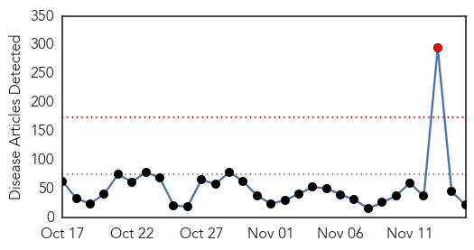
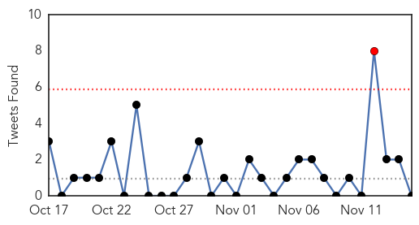
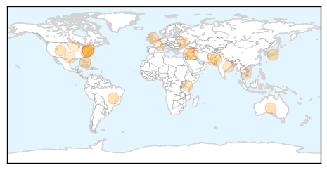
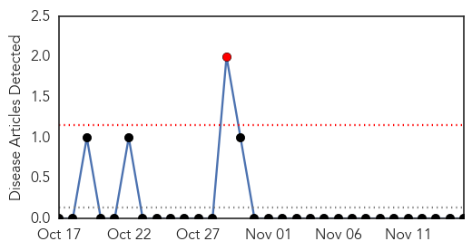
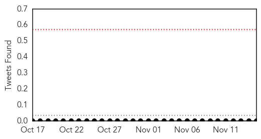

Unknown
30-Day Web Trend
1 alerts, 0 warnings

30-Day Twitter Trend
1 alerts, 0 warnings

Article Locations
Article Confidences

Top Articles:
- 0.979
- More than 300,000 in US infected with ‘kissing bug’ disease
- 0.917
- Chicago Tribune
- 0.917
- Chicago Tribune
- 0.917
- Chicago Tribune
- 0.917
- Chicago Tribune
- 0.907
- Unexplained, polio-like illness has paralyzed 75 kids
- 0.888
- Tope Elementary closed because of fast spreading stomach virus
- 0.866
- Russia won't demand early repayment of $3 bln lent to Ukraine
- 0.866
- Islamic state militants withdraw from area around Iraq refinery
- 0.819
- Hillgrove High students to be retested for TB
- 0.811
- Scientists celebrate 'major milestone' towards global eradication of polio
- 0.776
- 4,600 people suffering from AIDS in city: Expert
- 0.773
- Improper Contact Lens Use Causes Millions of Eye Infections: CDC
- 0.768
- Pakistanis may face polio screening, warns WHO
- 0.766
- Are the health risks of keeping exotic pets increasing?
- 0.681
- UN Denies Using Kenyan Vaccination Program for Population Control
- 0.657
- WHO extends travel restrictions for 90 days
- 0.601
- Few Texas hospitals lose funding after ‘immediate jeopardy’
- 0.589
- HIV Possibly Contracted From Manicure
- 0.577
- Bouygues un peu plus optimiste pour 2014, CA +1% au T3
- 0.562
- East Asia Summit adopts unprecedented regional malaria goal
- 0.555
- Suspected norovirus outbreak hits 80 at elementary school
Top Tweets:
- 0.748
- Un muerto en intervención de la FTC en el norte: Los integrantes de la Fuerza de Tarea Conjunta realizaron all... http://t.co/SR0JkUJBhn
- 0.549
- No, Public Health England advice is "no restrictions while no symptoms" and "self monitor temperature for 21 days".
Yellow Fever
30-Day Web Trend
1 alerts, 0 warnings

30-Day Twitter Trend
0 alerts, 0 warnings

Article Locations

Article Confidences

Top Articles:
-
No articles found for Nov 15, 2014
Top Tweets:
-
No tweets found for Nov 15, 2014